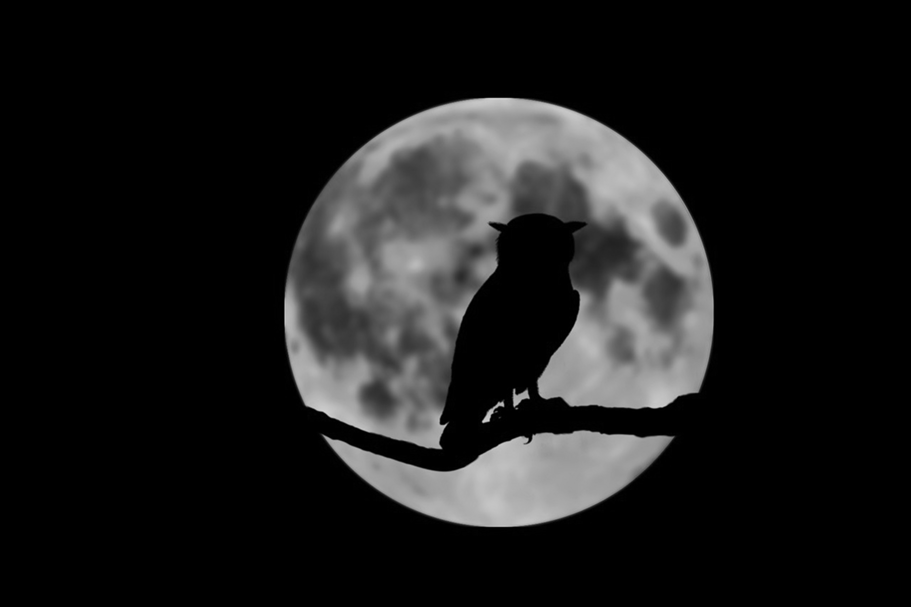
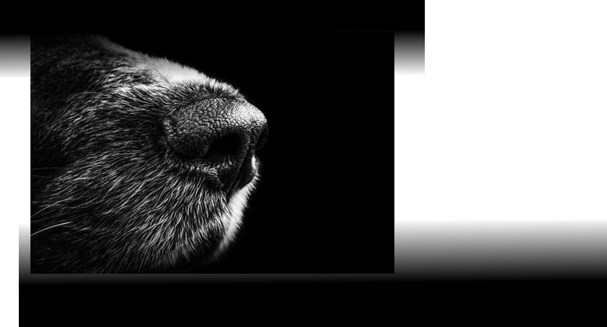
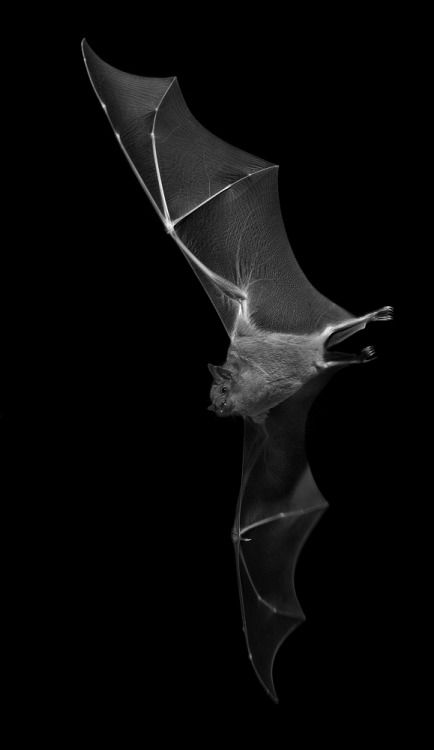
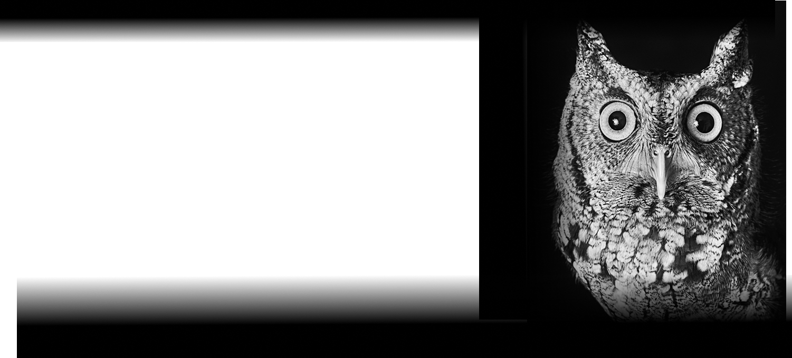
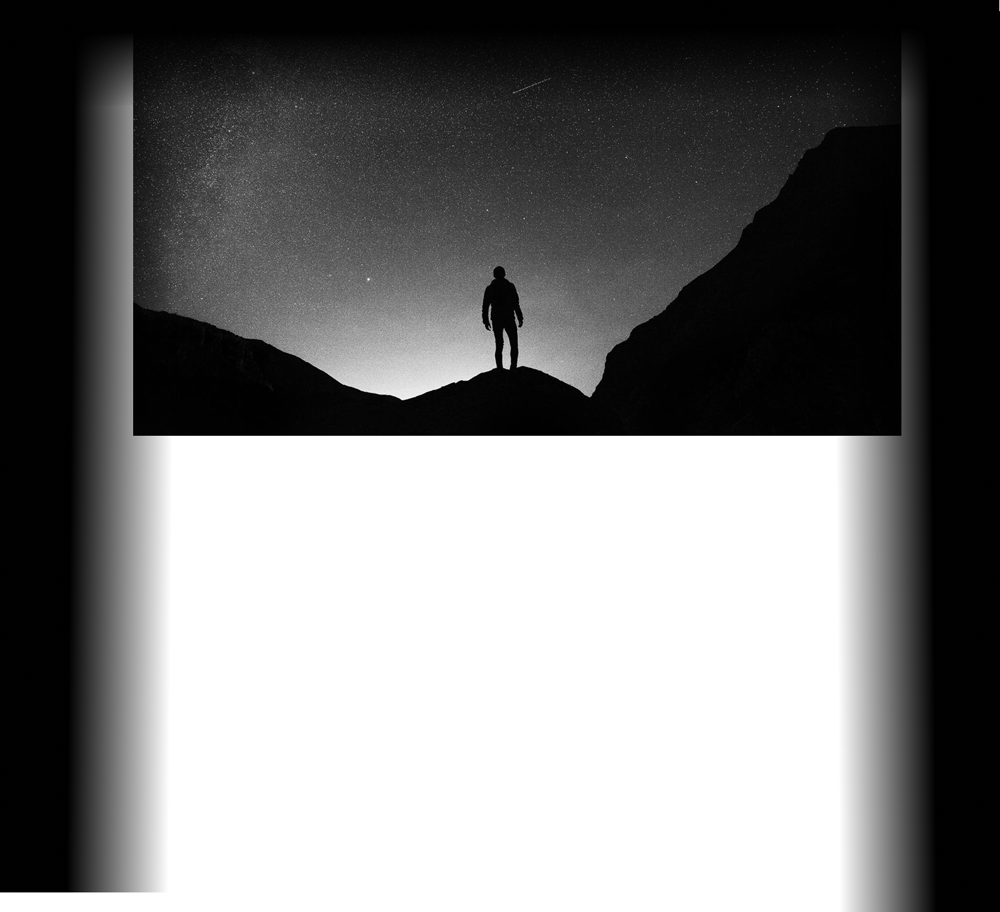

Un mondo immenso
Come gli animali
percepiscono la
realtà.
Un viaggio nei sensi sorprendenti
oltre i limiti umani

01/05
Olfatto
Il mondo si legge con il naso
Per un cane, un odore è molto più di una traccia:
può rivelare informazioni su luoghi, oggetti e altri
animali. Ogni profumo è una mappa chimica da esplorare.
Ascoltare per vedere
Pipistrelli e delfini utilizzano
l'ecolocalizzazione,
sfruttando suoni e
ultrasuoni che ritornano agli animali
per raccogliere
informazioni sull'ambiente e ciò che li circonda.

03/05UNA BUSSOLA INVISIBILE
Alcuni animali sfruttano il campo magnetico terrestre per orientarsi durante gli spostamenti. La magnetoricezione è una bussola silenziosa, il cui funzionamento resta in parte un mistero.

04/05
Il mondo non è uno solo
L'inquinamento luminoso, il rumore e le alterazioni ambientali possono interferire con i segnali da cui dipendono gli animali.